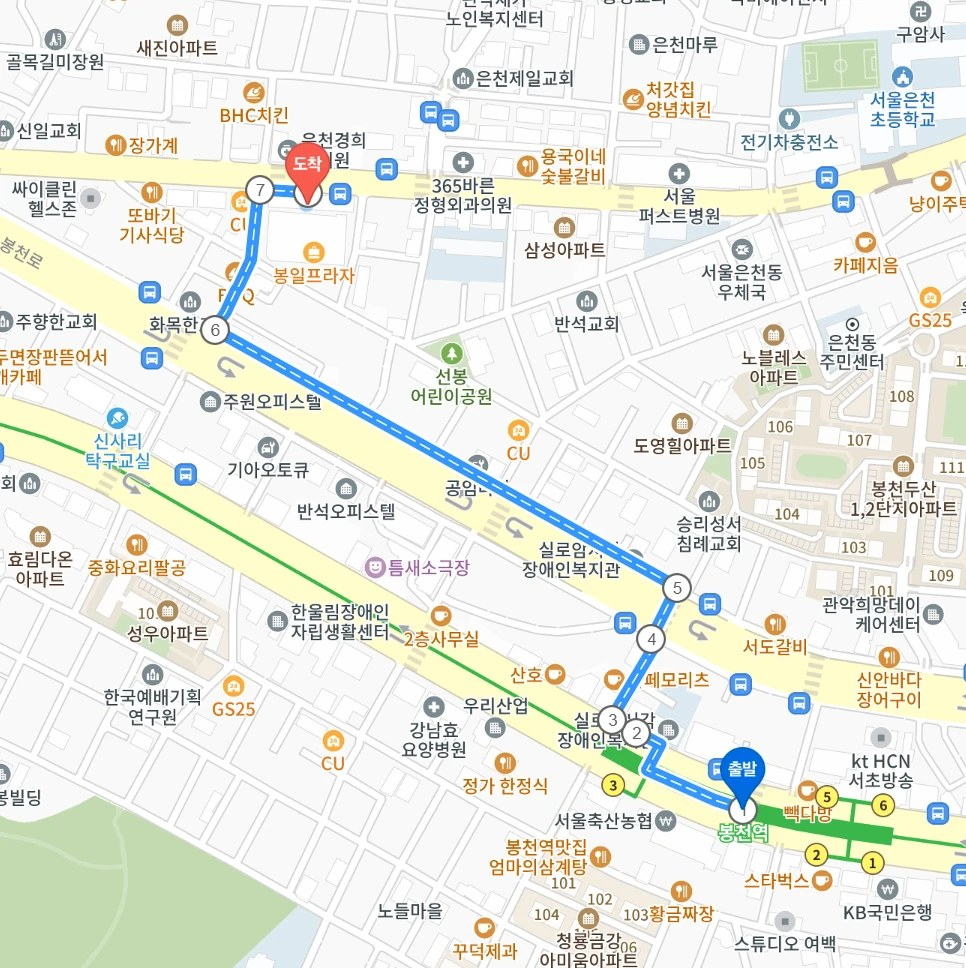
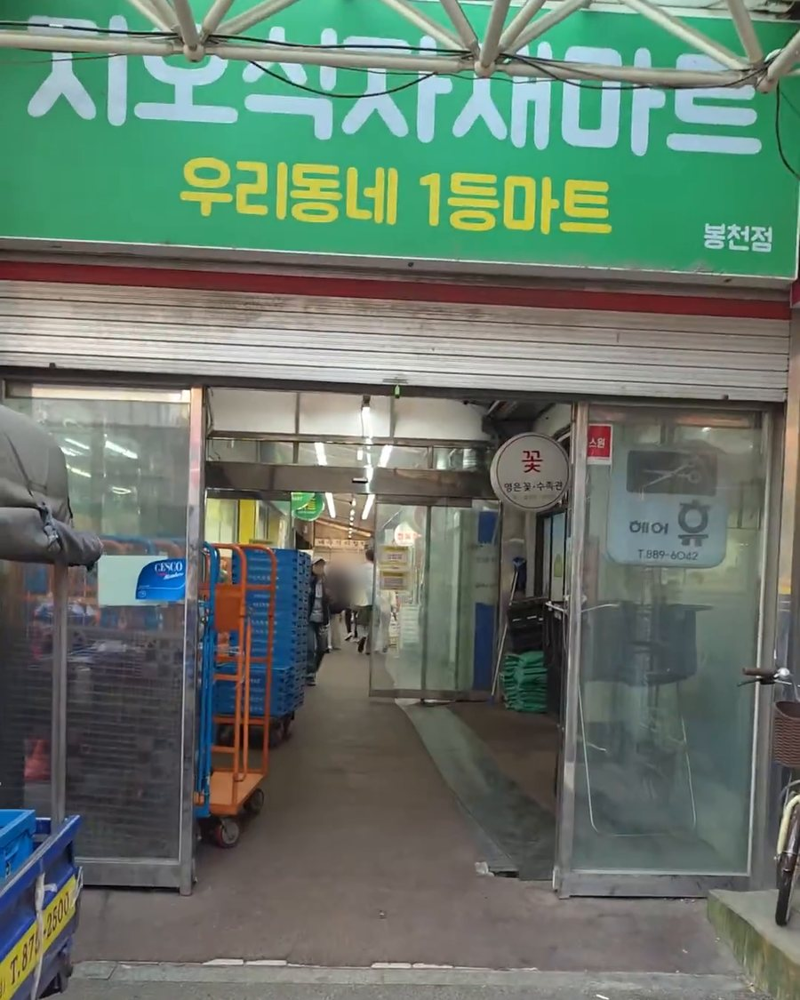
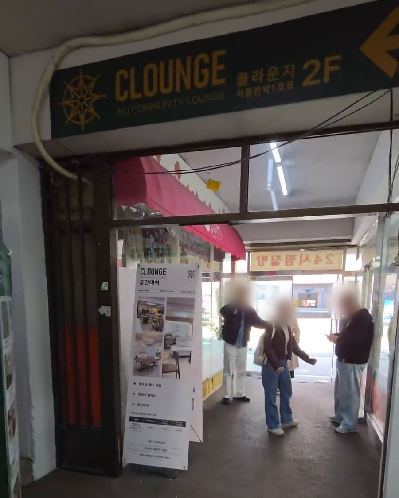
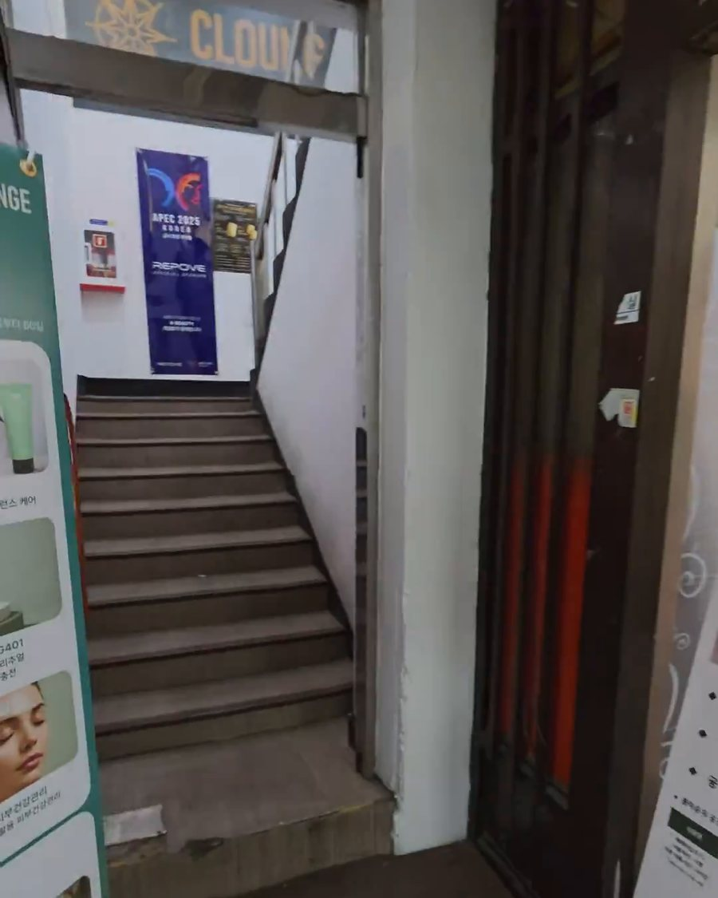

예배 시간
주일 예배
오전 11:30
매주 주일, 말씀과 성경이 정한 순서에 따라 예배합니다.
☾ 오시는 길
봉천역 4번 출구에서 걸어서 8분
- 지하철 2호선 봉천역 4번 출구출구로 나와 큰길을 따라 걷습니다.
- 봉일프라자 건물 찾기약도의 파란 길을 따라오면 은천로에 있는 봉일프라자가 보입니다.
- 2층 계단으로 올라오기건물 2층 계단으로 올라오시면 클라운지 156호입니다.
오는 길 영상으로 보기
봉천역에서 예배 장소까지, 짧은 영상

☾ 사진으로 보는 길
건물에 도착하면 이렇게 들어오세요



헌금 안내
신한은행 140-013-747227
예금주 달빛교회